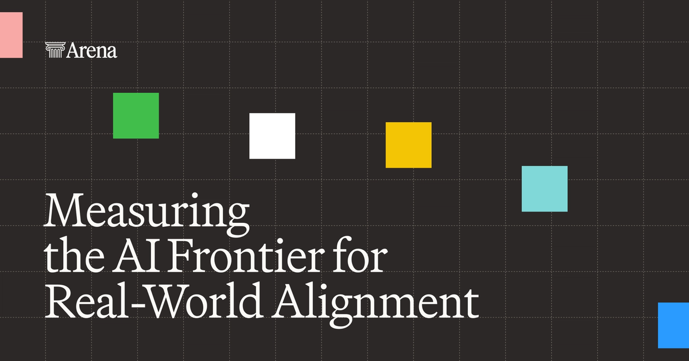

Executive Summary
This article reads the $200 million investment Arena, the company behind an AI model leaderboard, received on 8 October 2026, together with the question of what that money was priced on. Lightspeed Venture Partners and Khosla Ventures led the round, and the company was valued at $3.1 billion. It was $1.7 billion this January, so the figure has nearly doubled in ten months.
Then there is what this company holds. Not a model, not a chip. It is the record of users placing two model answers side by side and picking the better one. Arena sells analytics built from that record to model labs and enterprises, and it lifted annualized revenue from $30 million this January to $100 million by June. Here the ledger that files human labeling under costs gets turned around.
The facts and figures carried in this article come from TechCrunch reporting, from the announcement Arena published itself, from coverage of the Llama 4 episode, from the paper "The Leaderboard Illusion", and from the official response Arena gave that paper. The move in sections 4 and 5 toward who votes and what neutrality rests on belongs to no party in the story. It is this article's reading.

Key numbers
Four numbers. The first two are the size of the money. The third is the asset that money sits on, and the fourth is what made that asset worth paying for.
Sources: TechCrunch (8 October 2026), Arena announcement (October 2026), The Register (8 April 2025).
$3.1B
Valuation put on Arena
Nearly double the $1.7 billion of this January, ten months on
$100M
Annualized revenue as of June
It stood at $30 million this January
62 million
Comparison votes on record
Text, image, code and the rest combined; cumulative sessions stand at 350 million
32nd
Where the public Llama 4 Maverick landed
A different model from the submission that had taken 2nd on the same leaderboard
A Leaderboard Company That Nearly Doubled in Ten Months
Arena runs the leaderboard people look at when they pick an AI model. Ask a question and two answers appear side by side with the model names hidden, and the user picks the one they prefer. Those picks accumulate into a ranking. The service began in 2023 as a UC Berkeley research project called Chatbot Arena, and on 28 January this year it dropped the "LM" from its name and became Arena. It is no longer a place where only language models compete, the company explained.
On 8 October the company said it had raised $200 million in a Series B. Lightspeed Venture Partners and Khosla Ventures led the round, and Salesforce Ventures, 01 Advisors, Dell Technologies Capital and Endeavor Catalyst came in alongside them. Existing investors a16z and Felicis stayed. The valuation set in that round was $3.1 billion.
The pace is hard to miss. When the company raised $100 million in a seed round in May 2025, the valuation was $600 million. On 6 January this year a Series A took in $150 million from Felicis and UC Investments and put the figure at $1.7 billion, and that January number rose to $3.1 billion in ten months. The diagram below lays that trajectory out in one line.
The Votes Come Free, the Record Is What Sells
The leaderboard itself charges nothing. Anyone can go in, ask a question and pick one of the two answers. The money comes from the other side. In September 2025 Arena released AI Evaluations, its first commercial product since the company was founded. It is an analytics service through which model labs and enterprises look at how their own model is judged by real users and which tasks it falls behind on.
Less than four months after launch, in December 2025, annualized revenue from it reached $30 million, and it was at the same level at the Series A this January. By June it had passed $100 million. The user side grew over the same stretch. As of this January there were 5 million monthly users across 150 countries, and the October announcement put monthly visitors in the tens of millions. Cumulative platform sessions number 350 million, and votes across all modalities 62 million.
The two currents run as one loop. The more people use it for free, the more votes pile up, and the more votes pile up, the more analytics sell. The buyers of those analytics are the very model labs the votes are scoring.
The ground the loop turns on has widened too. A comparison vote ends with one pick between two answers, but Arena has opened Agent Arena, which hands a model work that runs through several steps and watches the process. According to the announcement, in less than five months since it opened, Agent Arena alone has accumulated 7 million sessions. The safety index discussed later counts its real-world agent sessions from here.
The Exam With Fixed Answers Lost Its Credibility
Before human votes could carry this kind of price, the exam with fixed questions and fixed answers had to give up the place first. If the questions never change, a model can be tuned toward those questions, and a rising score no longer tells you whether ability rose.
An episode in April 2025 showed this was no abstract worry. Meta released Llama 4 and wrote in its announcement that an experimental chat version had scored an ELO of 1417 on LMArena, and that score put it 2nd on the leaderboard. Then researchers matched the model published on Hugging Face against the responses and found the two were not the same model. The submission ran long and leaned on emoji; the public version was short. When the public version went onto the leaderboard on 11 April, it landed at 32nd. LMArena said this was not what it had expected of a model provider, took the unusual step of raising the problem itself, and revised its submission policy.

The paper "The Leaderboard Illusion", out the same month, argued this was not one company going off the rails but a gap in the structure. A large provider can test several variants privately before release and put up only the one that scored best. According to the paper's abstract, Meta tested 27 variants that way before releasing Llama 4. A problem of skewed data came with it. Google took 19.2% of all arena data and OpenAI 20.4%, while 83 open-weight models split 29.7% between them.
How the shares came to split that way is in the paper too. Closed commercial models are sampled into battles at higher rates and are removed from the arena less often than open-weight and open-source ones. While those two practices overlap, the gap in data access widens year on year. The authors also measured what that gap comes back as. On ArenaHard, a test set drawn from the arena distribution, relative performance rose by as much as 112% even without a great deal of extra data. The paper's conclusion was that this current does not actually make models better but overfits them to the arena's own dynamics.
The counterargument is public as well. On 9 May 2025 LMArena issued an official response, arguing that ArenaHard, the source of the 112%, is a static 500-prompt test set graded by a judge model and so is not the same thing as an arena where people vote. To the charge that private pre-testing pushes scores up sharply, it answered that after 50 rounds of testing and 3,000 additional fresh votes the score moves by about 11 points. Putting up several variants is open to anyone, it said, and the pre-testing rules had been public since 1 March 2024. Some points it accepted. Models tested as more than ten variants in parallel will have their scores marked provisional until enough fresh votes accumulate after release, and models removed from the arena will be disclosed as removed.
Meta's explanation had been that it had simply tried out experimental variants, and that explanation held for roughly nine months. What overturned it came this January. Yann LeCun, who left Meta in November 2025, told the Financial Times that the results had been "fudged a little bit", adding that different models had been used for different benchmarks.
Arena's shield starts here. A fixed exam can be memorized, but the comparative judgment a person brings in fresh each time cannot be. Yesterday's votes cannot make today's ranking, and tomorrow the leaderboard stays alive only if people keep coming and keep clicking. This data holds value only while it flows, and $3.1 billion is the price put on that flow.
Two Things Get in the Way of Picking by Score Alone
4.1No One Can Say Who the Voters Are
If a leaderboard is human judgment gathered up, then who those people are is what the ranking is made of. The published numbers are all totals. Tens of millions of monthly visitors, more than 150 countries, 350 million cumulative sessions, 62 million votes. The makeup of the people who cast those votes, on the other hand, which countries they came from and in what proportion, what kind of work most of them do, what sorts of questions they tend to ask, is something no published material we could find sets out.
People who go to a leaderboard to compare two answers skew toward those with a strong interest in AI, and the share asking in English may well run high. There is no guarantee that preferences gathered that way match the preferences of someone writing work documents in Korean. When you use a leaderboard as grounds for picking a model, whether these votes represent your use case is a separate question to ask.
4.2The Referee Sells Scorecards to the Players
The second thing in the way is the direction the money runs. Reduce the structure from section 2 to one sentence and the side doing the ranking sells analytics to the side being ranked. The investor list overlaps too. Lightspeed and Khosla, who led this round, and existing investor a16z have all put money into AI model labs that are themselves evaluated. No rule has been broken on any side. What remains is the question of what neutrality is proved with.
Arena said something about this before anyone asked it to prove anything. The announcement carries a diagnosis: "AI is advancing faster than our ability to evaluate it, and static benchmarks break down once models recognize they're being tested." It goes on: "The world needs a neutral third party to measure how safe and aligned AI actually is once it's in the hands of real people. Arena is stepping into that role today." Neutrality is a claim this company makes about itself.
The question grew heavier because Arena put out a new leaderboard called the Alignment Index on the same day as the Series B. By Arena's own account it compares 27 models across 90,000 real-world agent sessions, and it watches three signals: cases where the model did something the user did not ask for, cases where it attributed to the user something the user never said, and cases where it reported work finished that it had not finished. Arena itself wrote that this is a preliminary measurement rather than a comprehensive safety evaluation.
All three signals turn into losses in day-to-day work right away, so the index itself is useful. But when a place whose subjects are also its customers comes out with a safety report card, the grounds for believing that card have to come from how open the scoring is, not from the scores. Arena publishing part of the data and the methodology moves in that direction, though how far the judge model that grades those sessions and the scoring formula have been opened is hard to verify from outside.
The scale of that disclosure is on record. What Arena released to Hugging Face this time is 375,000 data points, with the evaluation methodology posted alongside it. The same approach was used for Llama 4 in 2025. LMArena then did not stop at raising the problem; it published roughly 2,000 records of the two models going head to head so anyone could match the responses themselves. Claiming neutrality in words and putting out raw material others can check against are different acts. Outsiders can count only the raw material that actually gets published.
Why Pebblous Is Watching This Round
This news usually gets consumed as an AI startup funding story. From where data work is done, what shows first is different. A pile of labels that people produced by hand has been priced at $3.1 billion. Labeling was a cost line for a long time. It was money you had no choice but to spend to train a model, and cutting it where you could was the virtue. On Arena's income statement the same thing is written on the other side.
What made the difference is not the quantity of the labels but their nature. They are not an answer key made once and done with, but a record of judgments that arrives fresh every day and means different things depending on who made it. So this asset carries two conditions. Its value falls when the flow stops, and its value cannot be explained if you cannot say who produced it.
For a team that gathers and uses human judgment, three things are worth checking now. Does the evaluation record we have collected also carry who judged, and under what conditions? Does that record resemble the distribution of the use case we actually intend it for? Do the interests of the place we handed the evaluation to and the product being evaluated overlap? All three are the kind nobody asks in ordinary times and everybody asks too late, once the scores start being doubted.
The same question applies to anyone consulting an outside leaderboard. It is a starting point for choosing a model, not a conclusion. Only with a step that measures again on our own data and our own tasks can a ranking built from other people's votes become our choice.
Thank you for reading this far. The TechCrunch piece that carried this round is here, and the announcement Arena published itself is here. If you have a line of your own for how far to trust an outside leaderboard when picking a model and where to start measuring yourself, we would be glad to hear it.
References
Primary announcements
- 1.Arena. (2026-10-08). "Arena Raises $200M Series B at $3.1B Valuation." Arena Blog.
- 2.Arena. (2026-01-28). "LMArena is now Arena." Arena Blog.
- 3.LMArena. (2025-05-09). "Our Response to "The Leaderboard Illusion"." Arena Blog. (last updated 2025-06-13)
- 4.Meta AI. (2025-04-05). "The Llama 4 herd: The beginning of a new era of natively multimodal AI innovation." Meta AI Blog.
Reporting
- 5.TechCrunch. (2026-10-08). "Popular AI leaderboard Arena nearly doubles valuation to $3.1B in 10 months." TechCrunch.
- 6.TechCrunch. (2026-01-06). "LMArena lands $1.7B valuation four months after launching its product." TechCrunch.
- 7.The Register. (2025-04-08). "Meta accused of Llama 4 bait-n-switch to juice LMArena rank." The Register.
- 8.Fast Company. (2026-01). "Yann LeCun: Meta 'fudged a little bit' when benchmark-testing Llama 4 model." Fast Company. (citing a Financial Times interview)
Academic
- 9.Singh, S. et al. (2025). "The Leaderboard Illusion." arXiv:2504.20879 (v2, 2025-05-12).